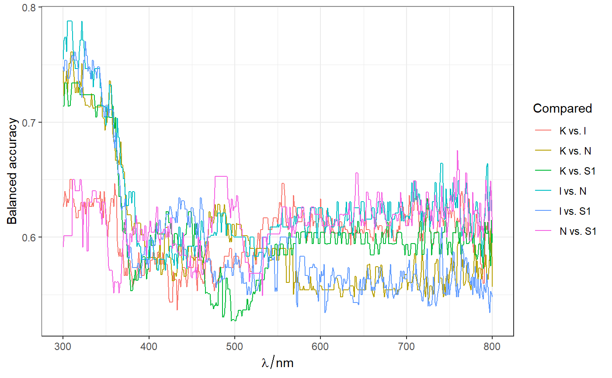
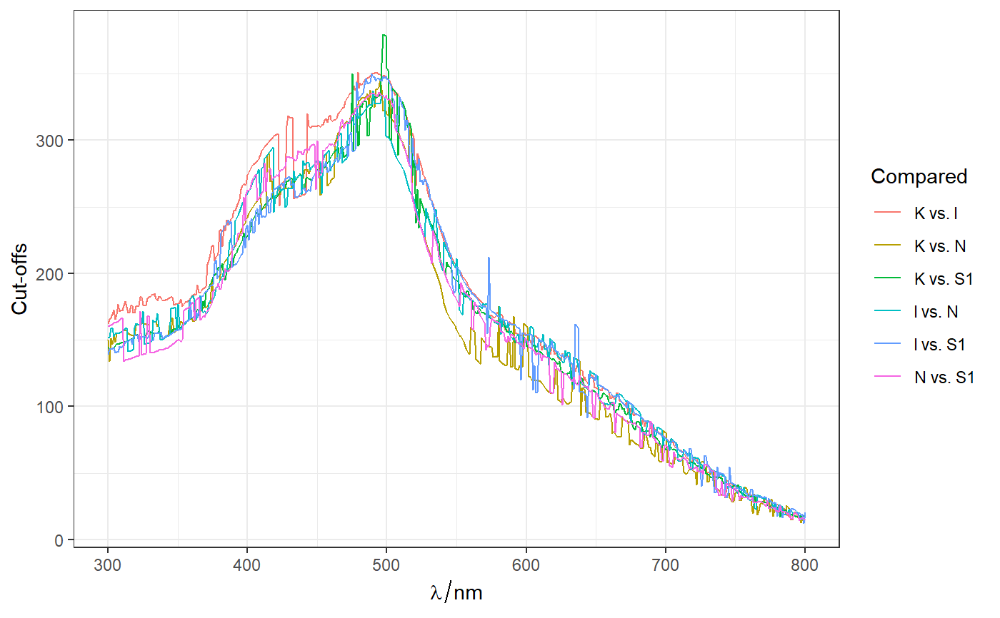
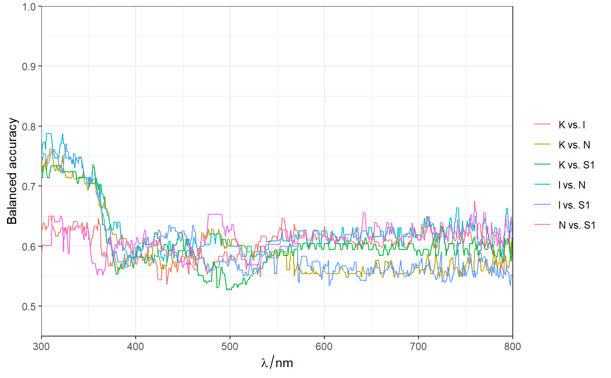

sp_class_perform.RdCompare spectra of each pair of indicated groups at each wavelength.
sp_class_perform(sp, by = stop("Parameter 'by' is missing."), measure = c("auc", "bac", "j", "sesp", "tpr")) sp_class_perform_cv(sp, by = stop("Parameter 'by' is not specified."), measure = c("sesp", "j", "tpr")[1], cvo = cvo_create_folds(sp, by, seeds), seeds = NULL, sp_test = NULL) # S3 method for sp_class_perform_cv print(obj) # S3 method for sp_classif_performance print(obj) # S3 method for sp_classif_performance predict(object, newdata, what = c("values", "performance"), ...) sp_classification_performance(sp, by = stop("Parameter 'by' is not specified."), measure = c("sesp", "j", "tpr")[1], cvo = cvo_create_folds(sp, by, seeds), seeds = NULL, ...) sp_compare_gr_wl(sp, by = stop("Parameter 'by' is missing."), measure = c("auc", "j", "sesp", "tpr"), ...) class_perform_sp(sp, by = stop("Parameter 'by' is missing."), measure = c("auc", "j", "sesp", "tpr"), ...)
| sp |
|
|---|---|
| by | A vector (factor variable) with indicated groups for each case:
either variable name inside the object |
| measure | string with measure of classification performance. Currently
available options: |
| cvo | a cross-validation object (cvo), created with function
|
Fields of sp_classif_performance object:
type type of data used ("Training data");
performance - hyperSepc object with performance estimates;
cutoffs - hyperSepc object with estimates of critical values
(cut-off points);
means - hyperSepc object with means of each compared group;
means.description - type of those means
("10% trimmed mean (of each group)");
compared_by_var - variable name, that was used for grouping;
measure- measure of performance.
Fields of sp_class_perform_cv object:
data - a hyperSpec object with data used in calculations;
cvo - cross-validation object used for analysis;
train_performance - performance estimates of training datasets for each repetition and fold;
test_performance - performance estimates of testing datasets for each repetition and fold;
cutoffs - estimates of cut-off values for each repetition and fold;
obj - a list of sp_classif_performance objects for each repetition and fold;
Other spHelper functions for spectroscopy and hyperSpec: IQR_outliers,
binning, file,
gapDer, hy2mat,
hyAdd_Label_wl,
hyAdd_Labels_PAP_PD_2014,
hyAdd_Labels_TD2009, hyAdd,
hyDrop_NA, hyGet_palette,
hyRm_palette, mad_outliers,
mean_Nsd, median_Nmad,
plot_hyPalette,
prepare_PAP_RK_2014__MATLAB_failui,
read.OOIBase32,
read.OceanView.header,
read.OceanView, read.sp.csv2,
read3csv2hy, replace_spc,
sd_outliers, spStat
library(spHelper) library(spPlot) library(ROCR) sp <- sp_filter(Spectra2) # Default measure of performace is AUC: sp_compared <- sp_class_perform(sp, "class") sp_compared <- sp_class_perform(sp, "class", measure = "bac") names(sp_compared)#> [1] "type" "performance" "cutoffs" #> [4] "means" "means.description" "compared_by_var" #> [7] "measure"## [1] "type" "performance" "cutoffs" "means" ## [5] "means.description" "compared_by_var" "measure" sp_compared$performance#> hyperSpec object #> 6 spectra #> 5 data columns #> 501 data points / spectrum #> wavelength: lambda/nm [integer] 300 301 ... 800 #> data: (6 rows x 5 columns) #> 1. spc: Balanced accuracy [matrix501] 0.6266667 0.7447368 ... 0.6031992 #> 2. type: [character] Balanced accuracy Balanced accuracy ... Balanced accuracy #> 3. Compared: Compared groups [character] K vs. l K vs. N ... N vs. S1 #> 4. Compared_1: Compared group 1 [character] K K ... N #> 5. Compared_2: Compared group 2 [character] l N ... S1## hyperSpec object ## 6 spectra ## 2 data columns ## 501 data points / spectrum ## wavelength: lambda/nm [integer] 300 301 ... 800 ## data: (6 rows x 2 columns) ## 1. spc: Mean of Se and Sp [matrix501] 0.6266667 0.7310526 ... 0.5763674 ## 2. Compared: Compared groups [character] K vs. l K vs. N ... N vs. S1 sp_compared$cutoffs#> hyperSpec object #> 6 spectra #> 5 data columns #> 501 data points / spectrum #> wavelength: lambda/nm [integer] 300 301 ... 800 #> data: (6 rows x 5 columns) #> 1. spc: Cut-offs [matrix501] 162.4586 150.1790 ... 15.36694 #> 2. type: type [character] Cut-offs Cut-offs ... Cut-offs #> 3. Compared: Compared groups [character] K vs. l K vs. N ... N vs. S1 #> 4. Compared_1: Compared group 1 [character] K K ... N #> 5. Compared_2: Compared group 2 [character] l N ... S1## hyperSpec object ## 6 spectra ## 2 data columns ## 501 data points / spectrum ## wavelength: lambda/nm [integer] 300 301 ... 800 ## data: (6 rows x 2 columns) ## 1. spc: Cut-offs [matrix501] 162.3499 151.5054 ... 19.60151 ## 2. Compared: Compared groups [character] K vs. l K vs. N ... N vs. S1 theme_set(theme_bw()) ggplot(sp_compared$performance, aes(color = Compared)) + geom_line()ggplot(sp_compared$cutoffs, aes(color = Compared)) + geom_line()# ~~~~~~~~~~~~~~~~~~~~~~~~~~~~~~~~~~~~~~~~~~~~~~~~~~~~~~~~~~~~ Sp2 <- Spectra2[,,500~510] sp_compared_cv <- sp_class_perform_cv(Sp2, "class")#> Error in cvo_count_folds(cvo): could not find function "cvo_count_folds"names(sp_compared_cv)#> Error in eval(expr, envir, enclos): object 'sp_compared_cv' not found## [1] "data" "cvo" "train_performance" ## [4] "test_performance" "cutoffs" "obj" # ~~~~~~~~~~~~~~~~~~~~~~~~~~~~~~~~~~~~~~~~~~~~~~~~~~~~~~~~~~~~# NOT RUN { \donttest{ rez <- sp_class_perform_cv(sp = Spectra2, by = "gr") rez } # }